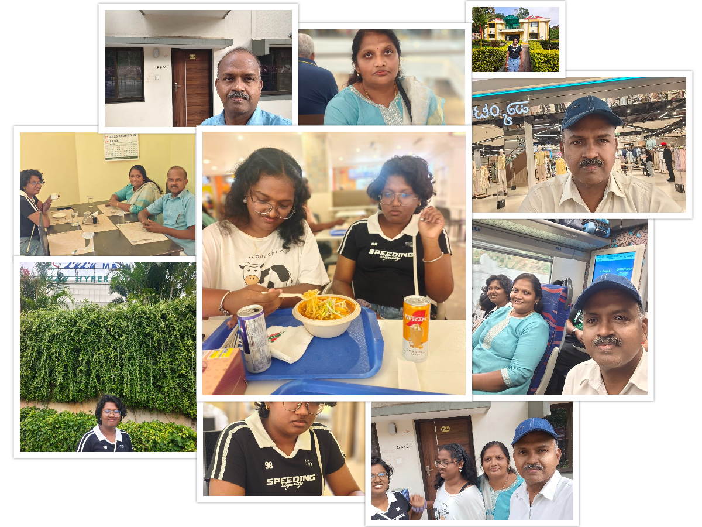

Our final day in Bangalore began with breakfast at BEL Guest House. Although it was the last day of the trip, we were determined to make the most of every remaining moment.
We visited Lulu Mall and enjoyed some final shopping and sightseeing. After lunch, we prepared for our return journey and reflected on the many happy experiences gathered during the trip.
At 2:50 PM we boarded the Vande Bharat Express back to Chennai. As the train departed Bangalore, we carried home not only photographs and souvenirs but also treasured memories of a wonderful family trip.